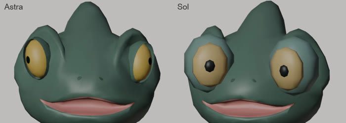
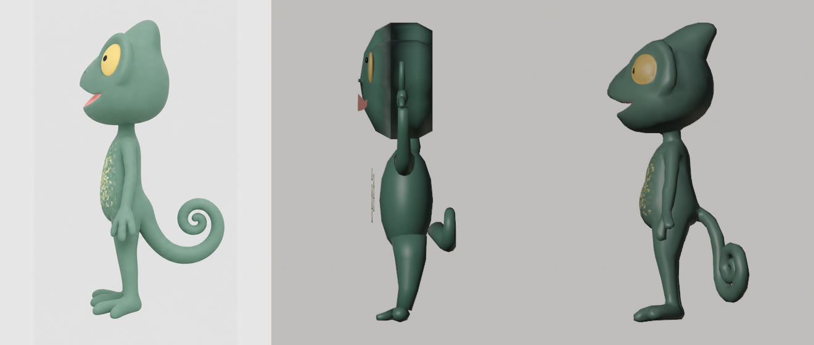
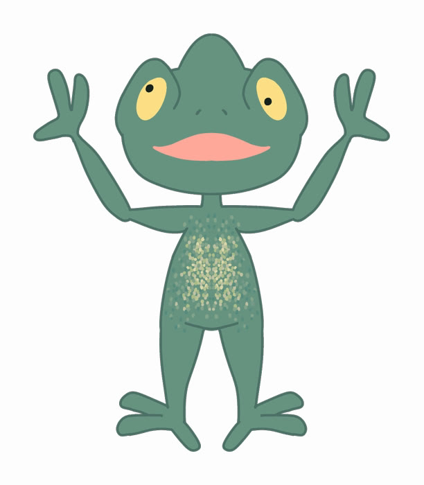
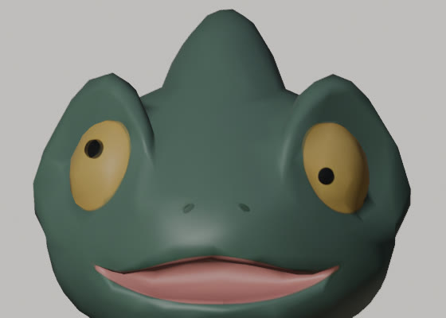
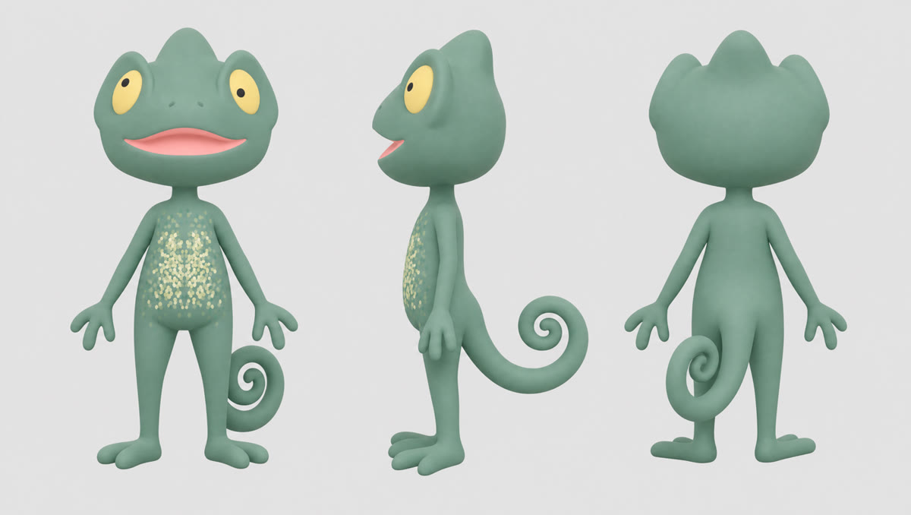
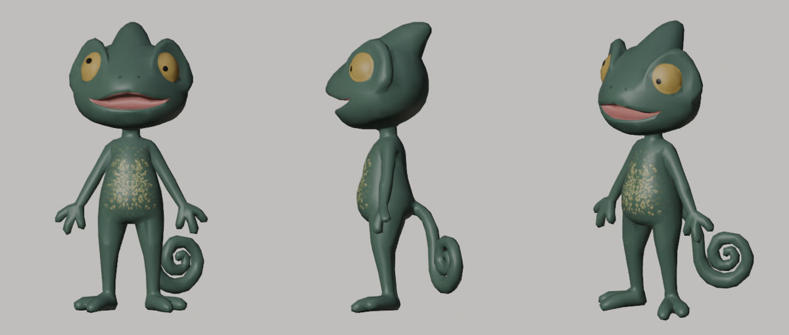
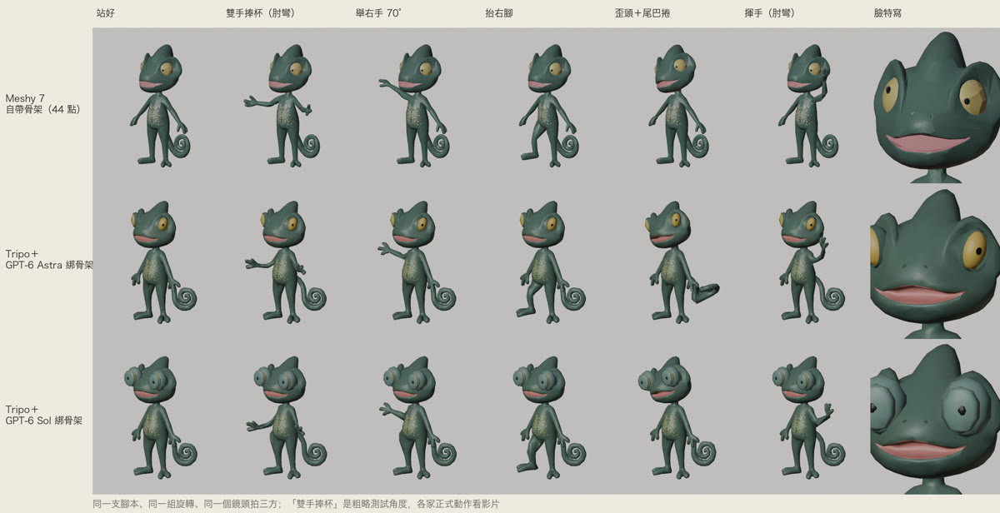
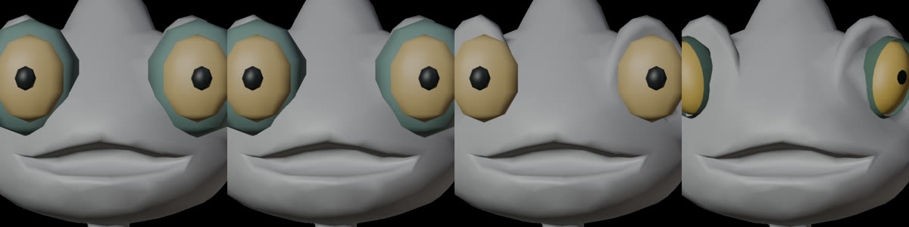
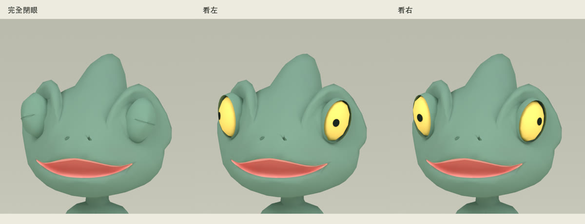
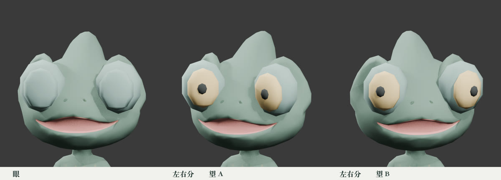

同一張工作單，Astra 與 Sol 綁同一隻變色龍

先講結論
- 這一次 Astra 做出像原稿的眼睛，Sol 沒有。兩邊花的 token 只差 1.5%，時間都在 20 分鐘內。
- Sol 的顏色是對的，錯在位置。它的黃色反而比 Astra 更接近原稿，但它把眼睛做成朝正前方、貼在臉上的圓盤；原稿的眼睛嵌在頭兩側的眼丘裡。
- 燈光統一之後，身體和動作看不出明顯高下。當初覺得「差很多」，有一部分是兩邊各自選的背景和燈光造成的。
每個模型只跑了一次，所以這篇只能說明「這一次、這一題」，不能證明誰普遍比較強。限制寫在後面。
在這之前：直接拿 2D 原稿，翻車
正文的輸入是「三視圖＋Tripo 模型」，不是美術原稿，原因是前一天的翻車。第一輪我們讓 GPT 只看美術原稿（一張正面圖），在 Blender 裡親手建一批動物角色，每隻約 2,400–3,000 面。結果只有少數接近原稿，多半比例走樣：該瘦的變胖，毛茸茸的造型變成一顆球。
變色龍算是翻得比較輕的一隻，但從側面看就知道問題在哪：

一張正面圖沒有側面和背面的資訊，模型只能猜。第一輪的頭從正面看很像原稿，側面卻像把正面剪影直接擠出厚度。後來的做法是先用 GPT Image 2 把原稿轉成三視圖（每張約 6.5 點），補上缺的角度。GPT 照三視圖重蓋，比例變好，但仍不到三視圖的水準；三視圖交給 Tripo 圖轉 3D，形體最好。所以正文改由 Tripo 負責形體，GPT 只負責骨架和眼睛。
限制：這兩輪 GPT 用的都是 Sol（派工時寫死，不是旗艦 Astra），所以資料只能證明「Sol 拿 2D 原稿會翻車，給三視圖有改善」，Astra 沒有直接拿原稿做過。但就我自己的經驗，直接拿 2D 原稿去做，非常容易翻車。
題目與輸入
這是我在做的一款手機遊戲裡的角色。玩家可以放大看單隻角色，所以眨眼、張望這種細節是賣點。變色龍的形體先用 Tripo 從美術原稿生成，大約 3,000 面、一張貼圖，眼睛是畫在貼圖上的、不能動。兩個模型要做的，是把畫上去的眼睛換成真的眼球，再替整隻綁上骨架、做三段動作。




| 工作單要求 | 內容 |
|---|---|
| 骨架 | 指定命名約 27 根，含 5 節尾巴、兩眼、眼皮；上限 32 根 |
| 權重 | 每頂點 ≤ 4 根；手肘彎 90° 不扁、肩膀舉 70° 不撕、尾巴能捲 |
| 眼睛 | 真眼球，黃眼珠＋黑瞳孔照原稿配色；兩眼各看各的；眼皮能完全闔上 |
| 面數 | 身體＋眼睛 ≤ 3,500 三角面 |
| 動作 | idle 2 秒、shake 雙手捧杯快搖 2 秒、look_around 雙眼各轉 3 秒，24 fps |
工作單節錄和開跑提示放在文末，可以複製。
怎麼比的
兩個模型在同一秒開跑，除了模型本身，其他條件都一樣：同一張工作單、同一個原始模型、同樣兩張參考圖、推理強度都設 high、同一台 Mac、同一版 Blender 5.2。兩邊都透過 Codex 命令列跑，有完整權限自己開 Blender、算圖、看圖、改程式，各寫自己的資料夾，看不到對方。
| Astra | Sol | |
|---|---|---|
| token | 215,899 | 212,798 |
| 完成時間 | 約 18 分鐘 | 約 20 分鐘 |
| 三角面（上限 3,500） | 3,480 | 3,364 |
| 骨頭（上限 32） | 27 | 29 |
| 每頂點最多權重 | 4 | 4 |
| 自己認的缺點 | 指尖、捲尾、大幅屈膝有稜角 | 手腕偏硬、手指沒真的握杯；「不建議當最終版」 |
硬性規格兩邊都達標。下圖是用同一支腳本、同一組旋轉、同一個鏡頭拍的姿勢對照；最上面一列是 Meshy 7 自動生成模型加自動骨架，題目不同，只當參考；而且它用的是遊戲預算設定（壓到 3,000 面、沒開 ultra、只給一張正面圖），不代表 Meshy 的最好表現。

燈光統一之後
當初讓人覺得「差很多」的，是兩邊各自算的預覽影片：Astra 選了淺色背景、柔光、近鏡頭；Sol 選了深灰背景，角色偏小偏暗。
我們把兩邊交出的模型檔放進同一個場景重算：同燈光、同鏡頭、不放杯子，只播它們各自做的動作。
差在眼睛：不是顏色，是位置
當天的直覺是「Sol 把眼睛做成米色」，接著又猜「眼皮蓋住了黃眼珠」。拆開模型之後，兩個說法都不對。我們直接從 .glb 檔讀出材質顏色，再和美術原稿取色比對：
| 眼珠黃色（sRGB） | 跟原稿的距離 | |
|---|---|---|
| 美術原稿 | 254, 224, 135 | — |
| Sol | 250, 221, 149 | 約 15 |
| Astra | 255, 218, 110 | 約 26 |
距離＝RGB 三個值的直線差，越小越接近。
Sol 選的顏色比較接近原稿，而且沒有被蓋住：它的眼皮在睜眼時縮成一個點，黃眼珠和瞳孔是整個頭最前面的東西。

- Astra：眼球嵌在頭兩側的眼丘裡，最前緣在臉最前緣後面約 10 公分，外面用跟身體同色的眼皮包住，跟原稿一樣。
- Sol：把眼睛做成兩個朝正前方的扁圓盤，疊在 Tripo 貼圖原本畫眼睛的位置，往外凸到跟臉最前緣齊平。外圈眼丘用了另一個顏色（150, 186, 175），比原稿皮膚色（104, 149, 129）淺很多，看起來像一圈淺色的框；閉眼時蓋上的也是這個淺色。
Sol 讀懂了文字規格：黃色、黑瞳孔、兩眼各轉、會眨眼，全部都做到了。它也不是檢查得比較少——粗略計算執行紀錄，Sol 提到 Blender 129 次、讀圖 135 次，Astra 是 84 次、66 次。但它把「眼睛該裝在頭的哪裡、朝哪個方向」弄錯了，看了一百多次圖也沒發現。這是三度空間的判斷，不是讀工作單的能力。
這份比對哪裡不客觀
這是一次實測，不是研究結論。比完當天，我請 Astra 只讀不動手，檢討整個 3D 工作流程；前兩點是它自己先提出來的——說這話的正是這次的贏家。
- 只有一次：每個模型只跑一次、只做一隻動物。同一個模型每次跑的結果都不一樣。
- 尾巴測試無效：腳本讓每一節尾巴繞同一個方向轉 20°，但兩副骨架的尾巴骨朝向不同，結果 Astra 的尾巴被折出怪角度，Sol 的幾乎沒動。本文不採用這一項。
- 各自算的影片：原本的並排影片比的是「誰的成品呈現比較好」，不是骨架。本文的動作對照改用同場景重算。
- 評分沒有事先訂、也沒有盲評：看圖的人知道哪個是誰。能量測的都改成數字了，但「像不像原稿」最後還是人眼判斷。
- 利益衝突：測試腳本、同場景重算、眼睛拆解和本文初稿，都由 Claude（Anthropic 的模型）完成，而 Claude 是 GPT 的競品。這次比的是 GPT 自己的兩個模型，Claude 沒有參賽，但出題和量測的一方仍可能影響結果。
模型會更新。這份結果只代表 2026 年 10 月 7 日的 Astra 與 Sol。
想自己比模型，這樣比
這次最大的收穫是比法。我們當天的兩個直覺都是拆開之後才更正的。
- 開跑前先寫評分表。能量測的就量：面數、顏色跟原稿差多少、零件在哪個位置、手肘彎幾度。
- 條件對齊並記帳。同一張工作單、同樣的輸入、同樣的推理強度、同時開跑，記下 token 與時間。
- 不要比各自算的預覽。把交付的模型檔放進同一個場景重算，最好用成品最後會出現的燈光。
- 姿勢測試要公平。不同骨架的軸向不同，別套同一組旋轉值；改量結果，例如尾巴實際捲了幾度。
- 每個模型至少跑三次。看平均，也看最差的那一次。
- 盲評。拿掉模型名稱，給不知道誰是誰的人評。
- 覺得不對就拆開來看。從檔案讀出顏色、座標這些數字，不要只看畫面下結論。
- 揭露誰出題、誰量測。尤其當寫測試的一方跟受測的模型是競爭關係。
附：兩個模型自己交的眼睛特寫
未經處理，燈光和背景都是它們自己選的。可以對照上面的同場景版本，看燈光怎麼影響印象。


工作單節錄（可複製）
輸入檔要自備：工作單裡的 3D 模型（glb）、三視圖、美術原稿沒有附在這頁，換成你自己的檔案。
兩個模型收到的工作單，公開版拿掉了專案路徑、關節座標和遊戲內部設定，其他照原文。開跑時另附三視圖與美術原稿兩張圖。
你是這款遊戲的主美術兼技術美術。照〈工作單〉替 <id>=chameleon 綁骨架、換真眼睛、做三段動作。附圖一是三視圖（造型正本），附圖二是美術原稿。<OUT>＝指定的輸出資料夾，只准寫這個資料夾。你有完整權限，自己跑 Blender、自己看圖、自己改。
# 給 GPT：替 Tripo 變色龍綁正規骨架、換真眼睛（2026-10-07，比較測試） ## 背景 動物角色的身體造型用 Tripo 圖生 3D。這個遊戲可以放大看細節，**眼睛要能眨、能四處張望**。所以要用正規骨架＋權重蒙皮，並把畫在貼圖上的眼睛換成真的眼球。 這次是比較測試：同一張工作單同時派給兩個模型，各做各的，並排比較。你有完整權限，自己開 Blender、自己擺姿勢看、自己修，**目標是放大看也不穿幫、動起來可愛**。 ## 素材 - 模型：Tripo 原始 glb（約 3,000 面、一張貼圖）。**朝向轉了 90°**：匯入後繞 Z 轉 −90° 讓臉朝 −Y，等比縮到總高 1.23 m，底部中心放原點。 - 關節參考：脖子、腋下、肩樞紐、胯下、髖、尾根的座標（已轉正縮放後，公尺；本文省略數字）。只是起點，你看模型自己定。 - 造型正本：三視圖（左正面、中側面、右背面）；美術原稿。 ## 遊戲裡的限制 - 手機遊戲，同一個畫面會有多隻角色；鏡頭從高處斜看，但玩家可以放大看單隻。 - **身體＋眼睛合計 ≤ 3,500 三角面**；骨頭 **≤ 32 根**；每個頂點 **≤ 4 根骨頭權重**、權重正規化。 - 只用一張底色貼圖＋純色材質（不要 PBR、透明、法線貼圖）。 ## 要做的事 1. **骨架**（命名照這個，之後程式要找）：`root`、`hips`、`spine`、`chest`、`neck`、`head`；`shoulder_L/R`、`upper_arm_L/R`、`forearm_L/R`、`hand_L/R`；`thigh_L/R`、`shin_L/R`、`foot_L/R`；`tail_01`…`tail_05`（沿捲尾，尾巴要能捲緊／放鬆）；`eye_L`、`eye_R`；眼皮用骨頭（`lid_L/R`）或形狀鍵 `blink_L`／`blink_R` 都可以。另加兩個空物件 `hand_L_socket`、`hand_R_socket` 掛在手掌心（之後拿道具用）。 2. **權重**：先自動權重，再自己修。重點驗：手肘彎 90° 不扁不折、肩膀舉 70° 不撕不凹、膝蓋抬起、尾巴捲、歪頭時脖子皮不破。 3. **眼睛**：Tripo 的眼睛是畫在貼圖上的，不能動。做成真的眼球（黃色眼珠＋黑瞳孔，照原稿配色），放在變色龍凸出的眼丘裡；眼球跟著 `eye_L/R` 轉，**兩眼可以各看各的**（變色龍特色）；眼皮能完全闔上眨眼。貼圖上原本畫的眼睛不能從縫裡露出來或變成第二對眼（必要時把貼圖那塊塗成皮膚色）。 4. **三段動作**（Blender action，24 fps，可循環）： - `idle`：2 秒，呼吸起伏、尾巴輕擺，中間眨一次眼。 - `shake`：2 秒，雙手在胸前捧杯斜向快搖（手肘要彎！）；預覽時在 `hand_R_socket` 上放一個簡單圓柱當杯子，**杯子不要匯進 glb**。 - `look_around`：3 秒，兩顆眼睛分別往不同方向轉、頭跟著小轉、眨眼。 5. **自己磨**：每輪擺姿勢＋拍圖檢查，建議 3–6 輪，直到放大看關節和眼睛都沒有穿幫。 ## 交付（全部在指令指定的 <OUT> 資料夾） - `綁骨架.py`（從原始 glb 重跑得出結果）、`chameleon_rig.blend`、`chameleon_rig.glb`（含骨架、權重、三段 action；匯出後自己再匯入一次確認動畫還在）。 - `姿勢測試.png`：一張 2×4 的格子，斜前方鏡頭：站好／雙手捧杯到胸前（肘彎）／舉右手 70°／抬右腳／歪頭＋尾巴捲緊／雙眼閉／兩眼各看一邊／`shake` 中間一格。外加一張**眼睛特寫**（閉眼、看左、看右三格）。 - `shake.mp4`、`look_around.mp4`（斜前方，640×640 以上，ffmpeg 有裝）。 - `量測.json`：三角面數、骨頭數、每頂點最多權重數、總高。 - 回覆（-o 指定的檔，繁中 ≤10 行）：磨了幾輪、哪裡最難、還有哪裡不滿意。 ## 紅線 - **只准寫 <OUT>**，其他檔都不動（另一個模型同時在做同一隻，輸出在別的資料夾）；不要 git。 - 不要呼叫 higgsfield、fal 或任何花錢的服務。